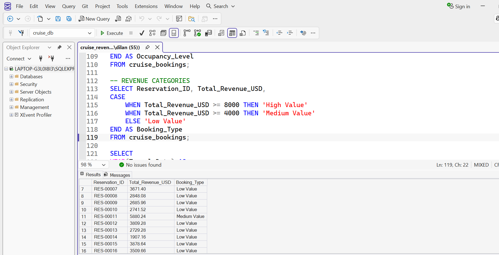

Case Study
Cruise Revenue Management
This SQL project analyses cruise booking data using Microsoft SQL Server to understand revenue performance, booking behaviour, occupancy rates, and customer satisfaction.
Business Problem
Cruise companies collect large volumes of booking and customer data every day, but raw data alone cannot support effective decision-making. The objective of this project was to use SQL to transform raw booking data into meaningful business insights by analysing revenue performance, booking trends, customer satisfaction, occupancy rates, and guest spending. The findings can help management identify high-performing cruise lines, understand customer behaviour, optimise pricing strategies, and improve overall operational performance.
Tools Used
Dataset
- Cruise Reservations
- Cruise Lines
- Ships
- Booking Dates
- Travel Dates
- Revenue
- Occupancy Rates
- Guest Spending
- Customer Satisfaction
Business Questions
- Which cruise line generated the highest revenue?
- Which ships received the highest customer satisfaction?
- Which countries booked the most cruises?
- Which package generated the highest guest spending?
- How have bookings changed over time?
- Which cruise lines performed above average?
SQL Workflow
The project followed a structured SQL analysis process, beginning with database setup and ending with business insights that support data-driven decision-making.
Database Setup
Created the Cruise Revenue Management database, imported the dataset, and verified data types before analysis.
Data Cleaning
Checked for missing values, duplicate reservations, and invalid revenue records to ensure data quality.
Data Exploration
Explored cruise lines, booking sources, guest countries, and reservation trends to understand the dataset.
Business Analysis
Used aggregate functions, CASE statements, date functions, and Common Table Expressions (CTEs) to answer key business questions.
SQL Query Gallery
The following screenshots showcase some of the SQL queries developed throughout the project. Each query answers a business question and demonstrates practical SQL techniques used during the analysis.

Revenue by Cruise Line
Used GROUP BY and SUM() to determine which cruise lines generated the highest revenue.

Bookings by Guest Country
Counted reservations by guest country to identify the markets contributing the largest number of bookings.

Customer Satisfaction
Calculated average satisfaction scores for each ship to compare customer experience across the fleet.

Guest Spending
Compared average guest spending across package types using aggregate functions.

Revenue Categories
Applied a CASE statement to classify bookings into High, Medium and Low revenue categories.

Above Average Cruise Lines
Used a Common Table Expression (CTE) to identify cruise lines generating above-average revenue.
Key Insights
- Royal Caribbean generated the highest overall revenue, indicating strong market performance.
- Certain cruise lines consistently achieved customer satisfaction scores above the overall average.
- Occupancy rates varied significantly across cruise routes, highlighting opportunities to improve capacity utilization.
- Guests booking premium packages recorded the highest average onboard spending.
- Booking activity showed clear seasonal trends, with peak demand occurring during holiday periods.
- The CTE analysis identified cruise operators consistently performing above the average revenue benchmark.
Business Recommendations
- Increase marketing efforts during low-demand months to improve occupancy rates.
- Expand premium package offerings to encourage higher guest spending.
- Analyze the strategies used by top-performing cruise lines and apply best practices across the fleet.
- Use customer satisfaction metrics alongside revenue when evaluating operational performance.
- Continue monitoring booking trends to support demand forecasting and pricing decisions.